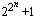

Prime Conjectures and Open Questions
By Chris Caldwell
Below are just a few of the many conjectures concerning primes.
- Goldbach's Conjecture: Every even n > 2 is the sum of two primes.
- Goldbach wrote a letter to Euler in 1742 suggesting that every
integer n > 5 is the sum of three primes. Euler replied
that this is equivalent to every even n > 2 is the sum of two
primes--this is now known as Goldbach's conjecture. Schnizel
showed that Goldbach's conjecture is equivalent to every integer
n > 17 is the sum of three distinct primes.
It has been proven that every even integer is the sum of at most six primes [Ramaré95] (Goldbach's conjecture suggests two) and in 1966 Chen proved every sufficiently large even integer is the sum of a prime plus a number with no more than two prime factors (a P2). In 1993 Sinisalo verified Goldbach's conjecture for all integers less than 4.1011 [Sinisalo93]. More recently Jean-Marc Deshouillers, Yannick Saouter and Herman te Riele have verified this up to 1014 with the help, of a Cray C90 and various workstations. In July 1998, Joerg Richstein completed a verification to 4.1014 and placed a list of champions online. More recent work by Oliveira e Silva has extended this to at least 4.1017. See [Ribenboim95] and [Wang84] for more information. - The Odd Goldbach Problem: Every odd n > 5 is the sum of three primes.
- There has been substantial progress on this, the easier case of Goldbach's
conjecture. In 1937 Vinogradov proved that this is true for sufficiently
large odd integers n. In 1956 Borodzkin showed n
> 314348907 is sufficient (the exponent is 315).
In 1989 Chen and Wang reduced this bound to 1043000.
The exponent still must be reduced dramatically before we can use computers
to take care of all the small cases.
- Every even number is the difference of two primes.
- Chen's work mentioned in the discussion of the Goldbach conjecture also showed that
every even number is
the difference between a prime and a P2.
- For every even number 2n are there infinitely many pairs of consecutive primes which differ by 2n.
- Conjectured by Polignac 1849. When n=1 this is the twin prime conjecture.
It is easy to show that for every positive
integer m there is an even number 2n such that there are
more than m pairs of consecutive primes with difference 2n.
- Twin Prime Conjecture: There are infinitely many twin primes.
- In 1919 Brun proved that the sum of the reciprocals of the twin primes
converges, as so the sum B = (1/3 + 1/5) + (1/5 + 1/7) + (1/11 + 1/13)
+ (1/17 + 1/19) + ... is Brun's constant. B = 1.902160577783278...
See the Prime Glossary's entry on the twin prime conjecture.
- Are there infinitely many primes of the form n2+1?
- There are infinitely many of the forms n2+m2
and n2+m2+1. A more general
form of this conjecture is if a, b, c are relatively prime, a is
positive, a+b and c are not both even,and b2-4ac is not a
perfect square, then there are infinitely many primes an2+bn+c
[HW79, p19].
- The number of Fermat primes is finite.
- Hardy and Wright give an argument for this conjecture in their well
known footnote [HW79,
p15] which goes roughly as follows. By the prime number theorem the
probability
that a random number n is prime is at most a/log(n)
for some choice of a. So the expected number of Fermat
primes is at most the sum of a/log()
< a/2n, but this sum is a.
However, as Hardy and Wright note, the Fermat numbers do not behave
"randomly" in that they are pairwise relatively prime...
- Is there always a prime between n2 and (n+1)2?
- In 1882 Opperman stated pi(n2+n) > pi(n2) > pi(n2-n) (n>1), which also seems very likely, but remains unproven [Ribenboim95, p248]. Both of these conjectures would follow if we could prove the conjecture that the prime gap following a prime p is bounded by a constant times (log p)2.
Printed from the PrimePages <t5k.org> © Reginald McLean.